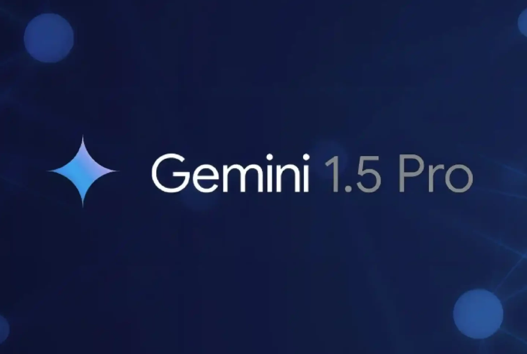

Gemini | Google
Gemini 1.5 Pro’s defining feature is its massive ‘context window’ as it allows up to almost 2 million tokens. Many AIs offer a lot less than this, meaning they can forget initial context if the conversation runs for too long. Gemini can process up to 1,500 pages of text, hours of audio and extensive code repositories in a single prompt. This means it can find small, important pieces of data in an extensive dump of information and easily sift through massive inputs.
